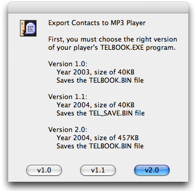
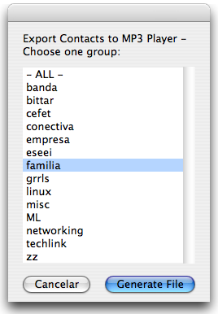
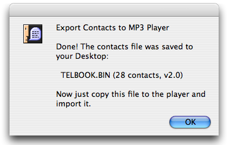
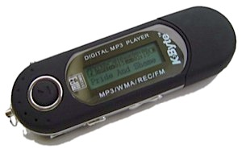

Some cheap Asian MP3 players (known as S1 players, not iPod!) have a simple Telephone & E-mail browser, whose contacts are managed by an external Windows program (TELBOOK.EXE). Windows? No thanks.
With this AppleScript you can export your Address Book contacts to the binary format used by the MP3 player. Then the contacts can be loaded into the player’s browser. The default fields are: full name, telephone numbers (mobile, home and work), e-mail and birthday.
Features: Runs fast, export all contacts or choose a group, removes accents from letters (optional), order contacts alphabetically, easy to customize, generates the three different TELBOOK.EXE binary formats.
- Free / Open Source AppleScript (Mac only)
- See installation instructions
- User reviews
- See source code (GitHub)
Not a Mac user? You can download this Python script that imports your contacts to the player, reading a CSV file.
Road Map
Step 1
On the first screen, you’ll have to choose the right version of the TELBOOK.EXE Windows program that came with your MP3 player. If you’re in doubt, try the three versions.

Step 2
Select the desired group or "- ALL -" to export all contacts. Then click on the Generate File button and the processing will begin. It takes just a few seconds.

Step 3
Work done! The contacts were exported to a binary file on your Desktop. Now plug in the MP3 player on the USB port, drag this file onto it, eject and unplug. On the player, go to TEL > Import (or similar) and before you count to three, your contacts will be there.

Important
This script should work for you if...
- Your player looks similar to mine. The same product is sold under several company names, including K-Byte, Midi Japan, Merlin, Foster and Britania. 
- Your player looks different, but uses the same firmware (player’s system). Export your contacts to the three available formats and try to import them. One may work.
- Your player comes with a program called TELBOOK.EXE and reads the contacts from the TELBOOK.BIN or TEL_SAVE.BIN files.